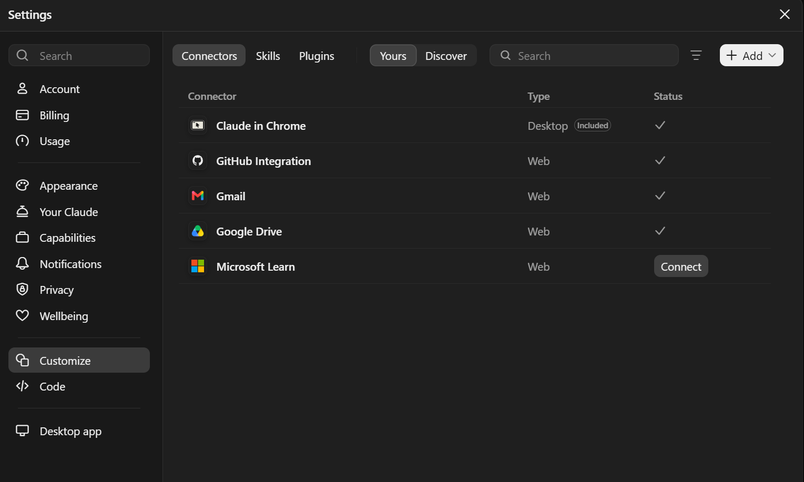
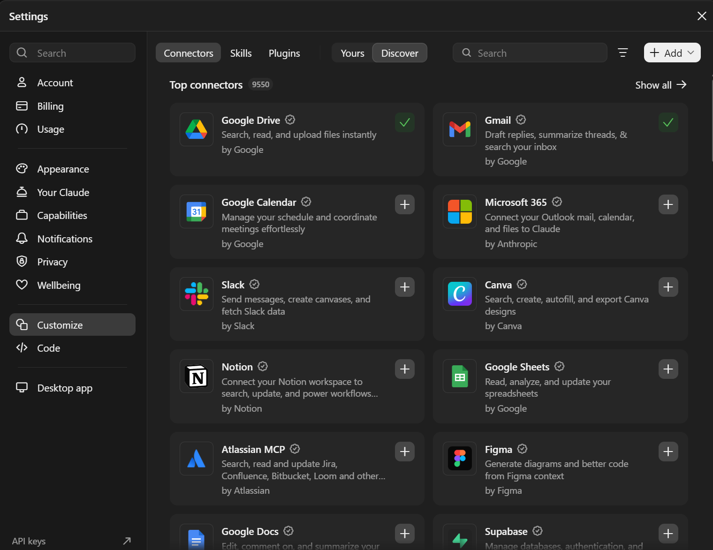

Connectors and workflows
What is a connector?
A connector gives Claude access to another service: a code repository, email, a calendar or documents. Claude can then fetch information straight from there, and you do not have to copy it into the conversation.
- Connectors are under Customize > Connectors.
- A connector is turned on per conversation from the + menu in the message field.
- For each function of a connector you can choose: Always allow, Needs approval or Blocked. Start with Needs approval.
The GitHub connector
FreeThe GitHub connector works on all plans. Claude reads public repos and those private repos you give it access to. It sees file names and contents and branches, but not commit history, pull requests or issues.
Connecting
- Open Customize > Connectors and choose GitHub Integration.
- Choose Connect and sign in to GitHub if it asks.
- For private repos, GitHub asks you to install the Claude GitHub App. Choose Only select repositories and give access only to the repos you need.
Using it in a conversation
- Choose + > Add from GitHub in the message field.
- Pick a repo from the list or paste its address, and choose Add repository.
- Ask: "What does this repo do, and which file would you start from?"
To add a repo to a Project, use the + button of the Project's files > GitHub, and you can pick only the folders you need. Sync now updates the content when the repo changes.

Issues and pull requests: GitHub's own MCP server can be added as a custom connector (see below), and then Claude also sees issues and pull requests. Claude Code is used for making changes to code (module 8).
GitLab
FreeAs of this writing (11/2026), GitLab has no official connector in Claude's connector directory. First check the directory (Customize > Connectors > Discover) to see whether one has appeared.
If not, you can try adding GitLab's own MCP server as a custom connector: Customize > Connectors > Add custom connector, with the address https://<gitlab-address>/api/v4/mcp. GitLab's guide describes using this server with Claude Code and Claude Desktop, not in claude.ai, so this is an experiment: it works only if the MCP server is enabled on your GitLab server and the server is visible to the internet. Ask your GitLab administrator. A free account can add one custom connector.
The surest way to use GitLab with Claude is Claude Code, which you see in module 8: there GitLab and GitHub work side by side.
Other connectors in brief
The directory has over a thousand connectors. Connectors are available on all plans, but the service itself may require its own subscription. Examples:
- Microsoft 365: search in Outlook, OneDrive, SharePoint and Teams
- Google Drive, Gmail, Google Calendar
- Atlassian (Jira, Confluence), Notion, Slack, Asana, Linear
To add a connector: Customize > Connectors > Discover, choose the service, Connect and sign in to the service. The directory marks entries as Verified or Community. Verified does not mean a security review.

Research mode, Cowork and skills
| Feature | What it does | Plan |
|---|---|---|
| Research mode (Research) | Claude researches a question thoroughly on the web and writes a report with sources. Requires web search to be on; it is started from the + menu in the message field. | Pro |
| Cowork | Claude Code's way of working, but for ordinary knowledge work: multi-step tasks with the machine's files in the desktop app, without a command line. | Pro |
| Skills | A folder of instructions and scripts that Claude takes into use for a particular task, for example making a certain document template. Managed under Customize > Skills; requires code execution to be on. | Free |
For organizations there is the Team plan (from $20/user/month billed annually, at least 2 users), with central administration and shared connectors.
Exercises
1. Ask about a public repo
Connect GitHub and add this course's repo github.com/Marcozarg/ClaudeKurssi to the conversation. Ask: "How is Slide mode implemented and which keys does it support?"
Show example answer
Claude finds the file assets/kurssi.js and says that every section with a heading is its own slide, S opens and closes the mode, the arrows, PageUp/PageDown and the space bar change the slide, and Esc closes it. It also mentions that S does not work in a text field. Check the answer by opening the file yourself: does Claude refer to the right places?
2. Research mode: changes before an upgrade
Start research mode and ask: "What are the most significant changes affecting administration when moving from Windows Server 2022 to 2025? List the removed features and the changes that need testing, with sources."
Show example answer
Claude makes several searches and returns a report with references to Microsoft's documentation. A good report separates removed and deprecated features and says what needs testing. Open at least two sources and check that they say the same as the report.
3. A connector's permissions
Open Customize > Connectors and the settings of the GitHub connector. Find out which repos Claude has access to and how the access can be removed. Look at the same from GitHub's side (Settings > Applications).
Show example answer
On Claude's side you can cut the connection (Disconnect). On GitHub's side, Settings > Applications shows the installed Claude app and the repos it has access to. There you can narrow the access or remove the app entirely. When you stop using the connector, remove the access in both places.
Optional: custom connectors and security
- A custom connector connects Claude to any MCP server. Add only servers whose maintainer you trust: through them Claude receives information and can take actions.
- Text that arrives through a connector can contain instructions that try to steer Claude (prompt injection). Keep write actions on Needs approval.
- Read how connectors work: claude.com/connectors.